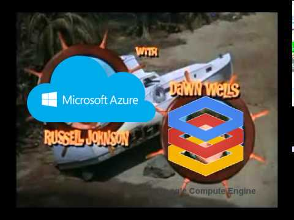

A Look at PostgreSQL in The Cloud
(with apologies to Judi & Ron Barrett)
About this talk
Evolution of Cloud offerings
What do you gain, what do you lose?
Should you use these services?
The Cloud
Is it a joke?

. . . Cloud => ( ) )
Why would someone do this?
Affordable
Developers ^^
Why would someone do this?
Probably administered correctly

Developers ^^
Why would someone do this?
Backups
Replication
Fail-over
Managed Upgrades
Security & encryption
Compliance - HIPAA, SOX, etc.
Enter Heroku
Est. 2007
Innovations for Ruby developers
Build packs
git push deploys
Anonymous database backend
Enter Salesforce
Est. 2010
PostgreSQL Backend
Est. 2011
Heroku PostgreSQL Features
Versions 9.2 (depr), 9.3 - 9.6
Simplified pricing, based on Plan tier, with add-ons
Performance monitoring dashboard
pg_stat_statements
pgstattuple
Connection by SSL
Heroku Clips
Some tiers include on-disk encryption
Integration with Libratto, New Relic
Extensions
PostGIS
pg_crypto
hstore, CIText, uuid-ossp
cube, earthdistance
postgres_fdw, redis_fdw, dblink
fuzzystrmatch, pg_trgm
GiST
pg_partman, pg_prewarm
PL/pgSQL, PL/v8
Heroku PostgreSQL Limitations
App is tied to Heroku philosophy
Followers (not replicas)
No dynamic resize (copy & follower only - db in maint)
IOPs bound to tier
max_connections tied to plan tier
Most conf options are fixed and hidden, except VACUUM
Copy is a wrapper around pg_basebackup (presumably)
Failover requires app restart
Upgrades manually initiated (copy, or wrapper around pg_upgrade)
Enter AWS Relational Database Service
PostgreSQL Est. 2013
RDS Features
PostgreSQL 9.3 - 9.6
Tight integration with AWS, but no lock-in
Stats temp directory RAM disk
Huge pages
Event Triggers
HIPAA, SOX, others by default
Encrypted by default
RDS Features
Over 50 supported extensions
log_fdw, ip4r
pg_buffercache
GIN, GiST, bloom
PL/Perl, PL/TCL, PL/Coffee
PostGIS Tiger Geocoder
RDS Features
Such features
wow!
RDS Limitations
Pricing similar to EC2 - IOPs, Memory, Reserved, On-demand
Network bandwidth not included in cost
IOPs, memory, CPU can be burst-ey
Upgrades through maintenance window
Tablespace support, but all on same volume
Harder to export data
And The Rest
Azure PostgreSQL Features
Community Preview
Version 9.6
Simplified pricing, based on Compute Units (100 CU's ~ 1 Core)
35 Days of backups, PITR to 5 minute windows
Included in base price (no cost of storage)
All data encrypted by default
SSL by default
No downtime to scale CU
Azure PostgreSQL Limitations
Yeah, still Microsoft
When we looked at offering managed PostgreSQL service for developers, we of course wanted to address those basic managed service capabilities such as automated patching, backup and restore capability, monitoring, alerting, logging, etc. However, talking to customers we learnt that there is a unique opportunity for Microsoft to do something more and better than other cloud providers, specifically in areas such as reliability, security and elasticity and making it simple and worry free for developers. We have therefore in many ways redefined the value creation with managed database service.
Azure PostgreSQL Limitations
4 nines (99.99) on general release
Community preview pricing
Storage, memory is tied to CU
Few PG metrics in monitoring
Google Cloud SQL for Postgres
Features
PostgreSQL 9.6
Beta
SSD or HDD storage
PL/SQL
btree-gin, btree-gist, chkpass, citext, cube, dict_int, dict_xsyn, earthdistance, intagg, intarray, isn, ltree, pgstattuple, pg_trgm, tablefunc, tsm_system_rows, tsm_system_time, unaccent, uuid-ossp
GCE PostgreSQL available configuration
autovacuum
autovacuum_analyze_scale_factor
autovacuum_analyze_threshold
autovacuum_naptime
autovacuum_vacuum_scale_factor
autovacuum_vacuum_threshold
log_autovacuum_min_duration
Google Cloud SQL for Postgres
Limitations
Pay for ingress and egress ($.05/GB, $.19/GB)
Cost of storage for backups
NO REPLICATION!
you cannot import or export more than one database at a time
No CSV import/export
So. . . Should I run my app on the Cloud?

Cloud all the things!
Thank you, OHIO!
Questions?
This presentation was built in reveal.js